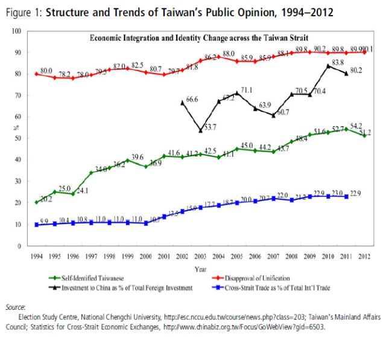
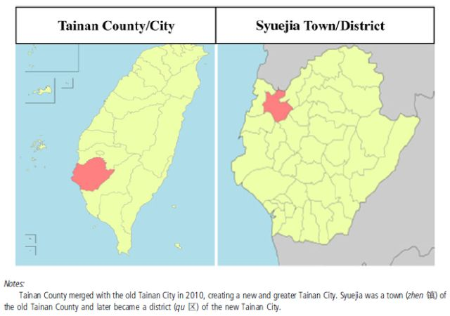
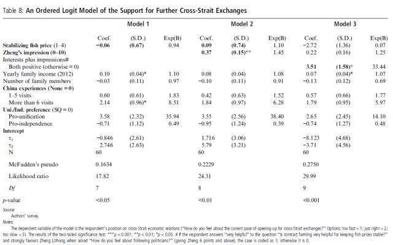
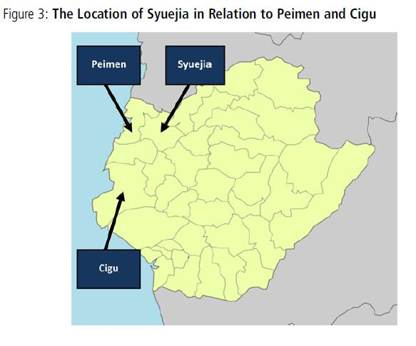
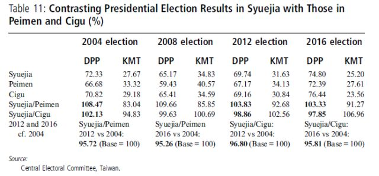

收录于合集
#政治态度 13 个
#比较政治学 121 个
文献来源： Shu Keng, Jean Yu-Chen Tseng and Qiang Yu, “The Strengths of China’s Charm Offensive: Changes in the Political Landscape of a Southern Taiwan Town under Attack from Chinese Economic Power,” The China Quarterly , Vol.232 (December 2017), pp. 956-981.
作者简介：
耿曙（Shu Keng）：浙江大学社会学系“百人计划”研究员、博士生导师。
曾于蓁（Jean Yu-Chen Tseng）：台湾佛光大学公共事务学系助理教授。
于强（Qiang Yu）：北京国际关系学院公共管理系副教授。

左起依次为本文作者耿曙、曾于蓁、于强
封面为本文通讯作者：曾于蓁
如果经贸往来可以轻易地形塑政治，那么海峡两岸早就已经获得统一。考察国共内战后两岸互动的历史，从中国大陆出台“叶九条”，特别是进入2000年之后，北京逐渐放松对台的军事压制，通过经济手段来消减岛内民众对统一的抗拒心理。相应地，“胡六点”更是直接提出“寄希望于台湾人民”。尽管如此，直到2008年马英九当选台湾地区领导人，承认以“一个中国”为核心原则的“九二共识”，两岸才逐渐恢复“三通”并签署两岸经济合作框架协议（ECFA）。由此，台湾对大陆的经济出口继续成长。但是在实施多年惠台政策后，台湾民众的观点似乎并未发生根本性转变，来自台湾政治大学选举与研究中心的动态调查数据更是显示，近20年来，岛内拒绝统一和强化“自我认同”的比例不降反升。由此，部分媒体与学者据以断言“惠台政策”效果有限。

但是 这样总体趋势的变化，受到多种因素所影响，因此不适合用以考察“惠台政策”的成效。毕竟，推动台湾民众观点的转变，是一个需要持续努力的过程。 因此，尽管对“惠台政策”的质疑此起彼落，大陆仍然持续投入大量资源，国民党（KMT）也一直努力推动贸易开放，而民进党（DPP）则始终试图对此抵制。从这个角度看， 海峡两岸的角力，其实可以视为利益和认同之间的对抗，大陆影响台湾民心的利器，主要还是通过经济手段来发挥影响。
为了更好地理解大陆对台经济政策的影响，本文作者通过对海峡两岸关系中的“易感群体”进行考察。 所谓“易感群体”是指直接暴露在大陆经济影响之下，理应最先改变自身政治态度的社会群体。 就本文而言，其选取的案例为台南市的一个渔业区——学甲区（此前为镇，下图所示）。为何选择这里？这也是本文行文的关切。对此，作者做了充分的理由陈述。 因为台南一贯是民进党的票仓，而学甲区一直是民进党最坚定的支持者。这里的民众操闽南话，平均受教育程度不高，以农业和渔业为生计来源，政治立场亲近民进党。但是在2009年莫拉克台风之后，当地的虱目鱼养殖业受到重创，使得大部分渔民的家庭背上了沉重债务。因此为大陆推动对台经济政策提供了空前机遇。 在北京政府的主导下，诸如上海渔业（SF）和福建海葵渔业（FHF）等一些大陆著名企业也相继与其直接签署了相关“契作协定”。就此而言， 学甲本身成为可供研究的“最不可能成立案例”。如果连这些泛绿渔民的态度都发生变化，将有助于检视大陆经济政策对岛内民众的影响。

在此之前，台湾著名杂志《商业周刊》也做过类似的研究，他们的结论是“在大陆的’银弹攻势’下，学甲渔民的政治立场没有发生一点变化”，这一结论在岛内被广泛接受。但是事实真的如此吗？针对《商业周刊》的研究，作者首先提出了质疑： 第一，《商业周刊》的调查研究在时机上考虑不周。在2011年就展开调查似乎为时过早，因为第一期契作的尾款尚未支付，次年的契作协议也还未签订。第二，在学甲地区开展的调查基于当地居民的随机抽样，只有500-600户家庭参与的“契作协定”，影响与变化很容易淹没在当地2万人的常住人口之中。第三，调查结果的报告时而前后不一，例如《商业周刊》发现该地区支持民进党的支持者仍然多于国民党，但是比例分别已经掉为57%比43%，这与他们报告该地区的“政党支持立场并未变化”有所不同。
接下来，本文作者在2011年9月至2013年夏季间，通过在当地18个月的田野调查，通过 滚雪球抽样（通过社邻网络来扩大样本强化受访者对访谈人的信任） 寻找访谈对象并对参加前两轮契作协定的渔民进行深度访谈。作者希望通过问卷来推动参与者评估项目并是否愿意继续推动该项目。此外，作者关切道，如果渔民从惠台政策中受益，那么受益的效果究竟为何？
通过对回收的问卷进行分析结果来看，在当地民众心目中，国民党中央和地方的领导人马英九、李全教的民调都分别高于民进党中央和地方的领导人蔡英文和赖清德。但是以上四位领导人的受欢迎度都没有大陆涉台事务主管部门Z姓副主任来得高。究竟为何？作者指出这是因为他力推两岸签订ECFA中的渔业协定，并会说闽南话、在学甲当地走访期间留下了亲民的印象。但是作者进而发问，既然Z姓官员赢得了当地渔民的好感，那么他们对中国大陆的政治如何看待呢？结果显示有超过80%的民众改变了他们对大陆的观感，并且有70%的民众支持在政经议题上和大陆密切合作。因此，作者得出结论： 首先，这些渔民对协定感到满意并愿意捍卫继续执行这些协定。其次，这些渔民态度的转变表明他们与传统的民进党支持者显著不同，他们对政策的影响效应很敏感。再者，受访者对渔业协定的支持、对大陆官员的好感以及与中国大陆合作的意愿相互交织，推动了经济政策效应向政治领域的外溢。 这其中的机制究竟为何呢？似乎需要进行进一步的检验。
作者随即运用定序逻辑斯蒂回归模型检视了受访渔民对渔业协定的评估及其对两岸关系的看法。在这些模型中，“统独”立场、访问大陆的意愿以及家庭年收入和家庭规模都被当作控制变量，回归分析结果如表8所示。

在模型1中，契作的直接经济影响（对于稳定鱼价的感受）并未对受访者两岸关系的立场产生显著的影响。在模型2中，对大陆官员具有好感则产生了显著的影响，但这当然并不意味着大陆不用对渔民施惠就能产生这种好感，因为后者的基础是来自利益的创造。在模型3中，如果渔民感受到契作的经济影响并对大陆官员具有好感，那么他/她就更可能支持两岸关系的进一步发展。换言之， 只有通过创造经济红利、制造大陆正面形象，才能最成功地影响倾绿渔民的政治立场，经济因素是必要的但并不能但靠它就能促成“魅力攻势”的运作。
后续的田野调查工作支持了上述渔民观点的改变，但是作者坦诚这些数据有如下局限： 首先，这些参与人数还不足够；其次，这些渔民都是利益相关者，他们也有动机去隐藏自身真实的偏好。进一步而言，在方法论上也存在“共同方法偏差”，并不能有效地考察受访者早前的态度，也不能追踪这些受访者观点的变化。 因此，作者结合2004-2016年间台湾地区领导人选举的数据进行考察。因为 这些数据不仅能反映民众对政党的偏好，更能透露民众对国家认同和两岸关系上的态度。 同样，这其中也可能包含着混淆因果机制的谬误，为了解决这一问题，作者采用 双重差分法（Difference In Difference, DID） ，通过多种参照来观察渔业契作协定的政治影响。因为传统的多元回归虽然有助进行统计控制，但是无法运用在缺乏微观层面的选举数据中。
首先，作者比较了渔业协定签订前后领导人选举的投票情况。首先，根据台湾的主流媒体报道，相较2008年，民进党2012年在该地区取得了更多的选票，说明渔业协定没有奏效。但是作者认为 2008年的得票率并非合适的“参照点”。因为在之前陈水扁执政的8年间爆发了一系列弊案和丑闻，导致民众对民进党厌恶上升的同时对国民党的好感上升 ， 换言之，2008的选举是非常特殊的，也因此2012年选举，民进党在学甲的得票率有所回档将是难以避免的。2012年民进党得票为68.37%，是2008年的104.91%。如果是这样，我们能够将这样的趋势归结为签订渔业契作所产生的负面作用吗？
因此，为了排除2008年选举的特殊影响，作者采用2004年的选举为参照点，进而得出了与《商业周刊》不同的结论。在契作开展之后的2012年，民进党的得票率只有2004年的94.53%，当然，2016年民进党大有斩获，其学甲得票率增为2004年的103.41%，变化的趋势十分合理，显示了2004年更合适作为参照点，但是这只是验证的第一步。
有了合理的参照点后，作者首先比较了民进党在学甲与台南的得票率（学甲：68.37%，台南：57.72%），用学甲得票率除以台南得票率得出的比例为118.45%。同样的方法显示，2004年的比例为116.70%。如果用契作开始之年的2012年比例比上2004年，那么会得出结果为101.50%的新比例。这样，民进党在学甲的得票率相较于整个台南市的得票比例基本没有变化，惠台经济政策似乎还没法那么有效地改变当地民众的政治态度。但是如果再等等，用同样的方法计算2016年的选举得票比，再将其与2004年进行比较，则发现民进党的得票比例降至94.93%。 这一结果显示相较于台南市的得票，民进党在学甲的得票比例的大幅下降，显示渔业协定逐渐扭转了当地居民的政治立场。
为了确保结论的稳健性，作者又选取与学甲相邻的两个区——北门与七股进行比较研究，做法是将DID方法运用在最相似的案例中比较中，考察渔业契作协定所造成的临界变化。 上述两区的位置如下图所示：

这两个区域在地理位置、经济结构与文化背景上与学甲相当近似，但是渔业协定并未包括这两个区，他们的渔民无从分享契作获利。 选举结果如下图所示：

作者首先比较了2012年民进党在学甲和北门的得票比（103.83%），然后采用相同的方法计算出2004年的比例（108.47%），用其除以2012年的比例得出95.72%的比例。接下来，再用同样的方式计算2016年的得票比（103.33%）除以108.47%，这显示， 在渔业协定签署并正式生效后，相较于民进党在北门镇的得票，他们在学甲区的得票率被削弱了。 对待七股区的投票变化也是用同样的方法考察，分别得出96.80%（2012的得票率除以2004年的得票率）和95.81%（2016的得票率除以2004年的得票率）的数据，再次确认 相较于在七股区的得票，民进党在学甲区的得票率的确是被削弱了。 通过上述的比较一再显示， 渔业协定对学甲当地的民众产生了有利于大陆的影响，尽管这对投票的边际效应很小，但是它们依然能够清晰显示经济策略的政治影响。
作者进一步自我提问——尽管学甲地区的民众因为受惠于渔业协定而在政治态度发生了变化，但是这种效应对周邻地区的影响是怎么样的呢？通过比较2004年和2012年民进党在台南市的得票率并没有发现明显变化。因此，没有显著的证据显示台南市受到“学甲效应”的影响。
接下来，作者分别将2012年选举中民进党分别在嘉义和台南的得票率与2004年相比，指出2012年台南的选战情势没有变化。然后，作者继续采用相同的方法比较了2012年民进党分别在台南与屏东的得票率（104.70%），再除以2004年的得票比（106.66%）得出了一个新系数（98.16%），显示出民进党在台南地区得票比例呈现出微弱下降的态势。但是，2016年的得票比（106.35%）与2004年（106.66%）却非常接近。
因此， 当将学甲分别与大台南市与周边地区相比较时，学甲民众的投票受到了渔业协定相当显著并且持续的影响，但是并没有进一步的证据佐证“学甲经验”能向台南的溢出效应。 换言之， 只有渔业协定能使当地居民带来直接获益时，才能发挥出它的政治影响。
作者最后总结道， 大陆对台的经贸政策旨在转变岛内抗拒统一甚至敌视中国大陆这一部分民众的政治态度，想通过“银弹攻势”来争取人心，推动两岸关系和平发展并最终实现中国的完全统一。 本文在微观上选取学甲契作参与者调查数据，在宏观上结合地方选举记录数据，验证了大陆对台经济政策在特定层面上的有效性，这与之前学界研究和《商业周刊》的评估结论都有所不同。但是作者也指出，学甲经验很难被其他地方复制。其原因有二， 首先，因为它需要投入大量的经济和人力资源，但是学甲仅仅是台湾368个区县中的一个，其他的地区比它要更加富裕，需要更多地资源和努力才能推动民众观念的转变，大大加大了大陆的付出成本。其次，“银弹攻势”需要通过大陆更加个性化地、积极的以及更加尊重的方式在岛内民众的心目中留下良好的印象。因此，北京在与台湾打交道的时候需要更具有艺术性的方式。 总而言之， 大陆对台工作单纯依靠经济惠台是不够的，更需要留给岛内民众一个更加积极正面的印象，才能稳定而渐进地改变台湾民众的政治态度。
编后记
对“大陆经济惠台政策究竟起到何种成效”这一议题的讨论缘起于本文通讯作者曾于蓁助理教授在台湾政治大学东亚研究所攻读政治学博士期间从事学位论文的写作（指导教授为耿曙博士），后来的改写正是在这一基础之上，由海峡两岸的中国政治学学者共同合作，最终发表在国际学界中国研究领域的顶级期刊——《中国季刊》上。 **这篇文章 既展现了充分的理论依据，也运用了扎实的田野调查以及严谨的统计分析，在特定层面上回答了无论是官方还是民间都颇为关心的问题，具有难能可贵的现实关怀。**作者最后提出大陆要更加巧妙地改变自身在台湾民众心目中的形象，与中央最高领导人对台工作的指示——推进两岸同胞“心灵契合”有异曲同工之妙。 特别值得指出的是，这篇文章的案例选取非常精巧，以小见大，在追寻因果效应的判定上也很严谨，这些优点都值得我们从事政治科学学习研究的同仁认真学习。
最后，政观全体同仁感谢本文主要作者耿曙研究员对我们编译的授权和鼓励。我们在编译工作完成后将稿件发给耿老师审订，得到了耿老师百忙之中的细致修改，耿老师的帮助使得我们在避免错误的同时加深了对这篇重要文献的理解。


广告点一点，也是支持学术公益
政观编辑部
感谢您支持学术公益
微信扫一扫赞赏作者 __赞赏
已喜欢，对作者说句悄悄话
取消 __
发送给作者
发送
最多40字，当前共字
上一页 1/3 下一页
长按二维码向我转账
感谢您支持学术公益
受苹果公司新规定影响，微信 iOS 版的赞赏功能被关闭，可通过二维码转账支持公众号。